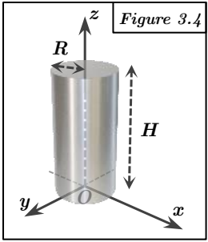

Figure 3.4 : Cylindre

Cylindre droit, base circulaire de rayon R dans le plan z=0 centrée en O, hauteur H le long de l'axe Z.
Méthode requise : Calcul direct (coordonnées cylindriques).
Concepts Clés :
- Matrice d'inertie, Corps volumique ($dm = \rho dV$).
- Coordonnées cylindriques : $x = r \cos \theta$, $y = r \sin \theta$, $z = z$. $dV = r dr d\theta dz$.
- Symétrie : Symétrie de révolution autour de l'axe Z. L'axe Z est principal. Tout axe dans le plan XY passant par O est principal. Donc $A = B$ et $D = E = F = 0$. La matrice est diagonale. Le plan $z = H/2$ est plan de symétrie, mais pas $z = 0$.
Géométrie et Paramétrisation :
- Domaine d'intégration : $r \in [0, R]$, $\theta \in [0, 2\pi]$, $z \in [0, H]$.
- Élément de masse : $dm = \rho r dr d\theta dz$.
- Masse totale :
$$ M = \iiint_V \rho dV = \rho \int_0^H \int_0^{2\pi} \int_0^R r dr d\theta dz $$
$$ = \rho \left( \int_0^R r dr \right) \left( \int_0^{2\pi} d\theta \right) \left( \int_0^H dz \right) $$
$$ = \rho \left[ \frac{r^2}{2} \right]_0^R [\theta]_0^{2\pi} [z]_0^H = \rho \left( \frac{R^2}{2} \right) (2\pi) (H) = \rho \pi R^2 H $$
Calcul des termes du tenseur :
Calcul de C ($I_{zz}$) : Moment d'inertie par rapport à l'axe du cylindre.
$$ C = I_{zz} = \iiint_V (x^2 + y^2) dm = \iiint_V r^2 (\rho r dr d\theta dz) $$
$$ = \rho \int_0^H \int_0^{2\pi} \int_0^R r^3 dr d\theta dz $$
$$ = \rho \left( \int_0^R r^3 dr \right) \left( \int_0^{2\pi} d\theta \right) \left( \int_0^H dz \right) $$
$$ = \rho \left[ \frac{r^4}{4} \right]_0^R [\theta]_0^{2\pi} [z]_0^H = \rho \left( \frac{R^4}{4} \right) (2\pi) (H) = \frac{1}{2} \rho \pi R^4 H $$
$$ = \frac{1}{2} (\rho \pi R^2 H) R^2 = \frac{1}{2} M R^2 $$
Calcul de A ($I_{xx}$) :
$$ A = I_{xx} = \iiint_V (y^2 + z^2) dm = \iiint_V ((r \sin \theta)^2 + z^2) (\rho r dr d\theta dz) $$
$$ = \rho \int_0^R \int_0^{2\pi} \int_0^H (r^3 \sin^2 \theta + z^2 r) dz d\theta dr $$
$$ = \rho \int_0^R \int_0^{2\pi} \left[ r^3 \sin^2 \theta z + \frac{z^3}{3} r \right]_0^H d\theta dr $$
$$ = \rho \int_0^R \int_0^{2\pi} \left( H r^3 \sin^2 \theta + \frac{H^3}{3} r \right) d\theta dr $$
$$ = \rho \int_0^R \left( H r^3 \int_0^{2\pi} \sin^2 \theta d\theta + \frac{H^3}{3} r \int_0^{2\pi} d\theta \right) dr $$
$$ = \rho \int_0^R \left( H r^3 (\pi) + \frac{H^3}{3} r (2\pi) \right) dr $$
$$ = \rho \pi \int_0^R \left( H r^3 + \frac{2 H^3}{3} r \right) dr $$
$$ = \rho \pi \left[ H \frac{r^4}{4} + \frac{2 H^3}{3} \frac{r^2}{2} \right]_0^R = \rho \pi \left( \frac{H R^4}{4} + \frac{H^3 R^2}{3} \right) $$
$$ = (\rho \pi R^2 H) \frac{R^2}{4} + (\rho \pi R^2 H) \frac{H^2}{3} = M \frac{R^2}{4} + M \frac{H^2}{3} = M \left( \frac{R^2}{4} + \frac{H^2}{3} \right) $$
- Par symétrie de révolution, $B = I_{yy} = A = M \left( \frac{R^2}{4} + \frac{H^2}{3} \right)$.
- Par symétrie de révolution, les produits d'inertie sont nuls : $D = E = F = 0$.
Résultat :
Le tenseur d'inertie en O est :
$$ [I_O]_{3.4} = \begin{pmatrix} M(\frac{R^2}{4} + \frac{H^2}{3}) & 0 & 0 \\ 0 & M(\frac{R^2}{4} + \frac{H^2}{3}) & 0 \\ 0 & 0 & \frac{1}{2}MR^2 \end{pmatrix} $$
Vérification :
La matrice est diagonale avec $A = B$, cohérent avec la symétrie de révolution autour de Z. Les formules sont les moments d'inertie standards pour un cylindre calculés à l'extrémité de son axe. On peut vérifier avec Huygens : le centre de masse est $G(0,0,H/2)$. En G, $A_G = M(\frac{R^2}{4} + \frac{H^2}{12})$ et $C_G = \frac{1}{2}MR^2$. Terme de transport $A_{O/G} = M(y_G^2 + z_G^2) = M(0^2 + (H/2)^2) = MH^2/4$. $C_{O/G} = M(x_G^2 + y_G^2) = M(0^2 + 0^2) = 0$. Donc $A = A_G + A_{O/G} = M(\frac{R^2}{4} + \frac{H^2}{12}) + M\frac{H^2}{4} = M(\frac{R^2}{4} + \frac{H^2+3H^2}{12}) = M(\frac{R^2}{4} + \frac{4H^2}{12}) = M(\frac{R^2}{4} + \frac{H^2}{3})$. Et $C = C_G + C_{O/G} = \frac{1}{2}MR^2 + 0 = \frac{1}{2}MR^2$. Les résultats sont cohérents.